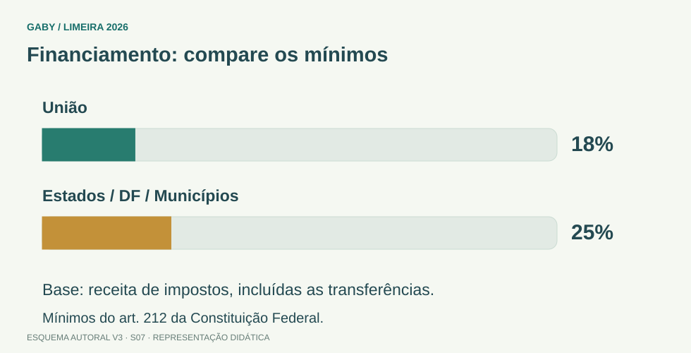

Objetivos do módulo
- Dominar os arts. 205 a 214 da Constituição Federal no texto vigente.
- Diferenciar direito à educação, princípios do ensino e deveres do Estado.
- Reconhecer prioridades dos entes federativos e percentuais mínimos de aplicação em educação.
- Compreender a finalidade constitucional do Plano Nacional de Educação.
Financiamento: compare os mínimos

Descrição em texto do esquema
- União: 18% da base constitucional.
- Estados, DF e Municípios: 25% da base constitucional.
- Base: Receita de impostos, incluídas transferências.
Oficina visual · aplique o esquema
Em um exemplo didático, a base constitucional de um Município é R$ 8 milhões. Qual o mínimo de 25%?
Atividade autoral complementar da V3. Registre sua resposta; a resolução está no arquivo de gabarito e revisão.
Mapa do conteúdo
1. Art. 205 - direito, dever e finalidade da educação
A Constituição abre a seção da educação estabelecendo três ideias fundamentais: a educação é direito de todos, é dever do Estado e da família e deve ser promovida e incentivada com a colaboração da sociedade.
A finalidade constitucional é o pleno desenvolvimento da pessoa, seu preparo para o exercício da cidadania e sua qualificação para o trabalho. A banca costuma criar alternativas erradas usando palavras como “exclusivamente”, “somente” ou retirando um dos sujeitos responsáveis.
2. Art. 206 - princípios do ensino
Entre os princípios estão igualdade de condições para acesso e permanência, liberdade de aprender e ensinar, pluralismo de ideias e concepções pedagógicas, coexistência de instituições públicas e privadas, gratuidade do ensino público em estabelecimentos oficiais, valorização dos profissionais da educação, gestão democrática do ensino público, garantia de padrão de qualidade, piso salarial profissional nacional e direito à educação e à aprendizagem ao longo da vida.
| Princípio | Pegadinha comum |
|---|---|
| Igualdade | A Constituição fala em acesso e permanência. |
| Gratuidade | Refere-se ao ensino público em estabelecimentos oficiais. |
| Gestão democrática | Aplica-se ao ensino público, na forma da lei. |
| Aprendizagem ao longo da vida | É princípio constitucional expresso. |
3. Arts. 208 a 211 - dever do Estado e organização federativa
O art. 208 assegura, entre outros pontos, educação básica obrigatória e gratuita dos 4 aos 17 anos, oferta gratuita também para quem não teve acesso na idade própria, atendimento educacional especializado preferencialmente na rede regular, educação infantil em creche e pré-escola até 5 anos, ensino noturno regular adequado e programas suplementares em todas as etapas da educação básica.
O acesso ao ensino obrigatório e gratuito é direito público subjetivo. O art. 211 estabelece regime de colaboração: Municípios atuam prioritariamente no ensino fundamental e na educação infantil; Estados e Distrito Federal, prioritariamente no ensino fundamental e médio.
4. Arts. 212 e 213 - financiamento
O art. 212 fixa percentuais mínimos de aplicação da receita resultante de impostos, compreendida a proveniente de transferências, na manutenção e desenvolvimento do ensino: a União aplica nunca menos de 18%; Estados, Distrito Federal e Municípios, no mínimo 25%.
O art. 213 estabelece que os recursos públicos são destinados às escolas públicas, admitindo destinação, nas condições constitucionais, a escolas comunitárias, confessionais ou filantrópicas definidas em lei e que cumpram requisitos.
| Ente | Mínimo constitucional |
|---|---|
| União | 18% |
| Estados | 25% |
| Distrito Federal | 25% |
| Municípios | 25% |
5. Art. 214 - Plano Nacional de Educação
O Plano Nacional de Educação tem duração decenal e busca articular o sistema nacional de educação em regime de colaboração, definindo diretrizes, objetivos, metas e estratégias.
A Constituição enumera finalidades como erradicação do analfabetismo, universalização do atendimento escolar, melhoria da qualidade, formação para o trabalho, promoção humanística, científica e tecnológica e meta de aplicação de recursos públicos em educação como proporção do PIB.
Exemplos resolvidos passo a passo
Exemplo 1
Situação: Questão diz: “A educação é dever exclusivo do Estado.”
Exemplo 2
Situação: Alternativa afirma que Município atua prioritariamente no ensino médio.
Exemplo 3
Situação: Pergunta o mínimo constitucional para Município aplicar em manutenção e desenvolvimento do ensino.
Pegadinhas e erros frequentes
- Trocar 18% da União por 25%.
- Dizer que educação é dever exclusivo do Estado.
- Trocar prioridades de Municípios e Estados.
- Confundir Plano Nacional de Educação com plano anual.
- Ignorar que o texto constitucional vigente já foi alterado por emendas.
Resumo de prova
- Art. 205: direito de todos; dever do Estado e família; colaboração da sociedade.
- Art. 206: princípios do ensino.
- Art. 208: educação básica obrigatória e gratuita dos 4 aos 17 anos.
- Direito ao ensino obrigatório e gratuito é direito público subjetivo.
- Municípios: infantil + fundamental.
- Estados/DF: fundamental + médio.
- Art. 212: União 18%; Estados/DF/Municípios 25%.
- Art. 214: PNE decenal.
Exercícios do módulo
Resolva sem consultar o arquivo de gabarito. As questões são autorais e construídas para treinar os conceitos do edital.
- dever exclusivo da União
- direito apenas de menores de idade
- responsabilidade somente das escolas
- direito de todos e dever do Estado e da família
Fonte: referência de estudo.
- proibição de instituições privadas
- gratuidade obrigatória de toda instituição privada
- igualdade de condições para acesso e permanência na escola
- seleção por renda como regra
Fonte: referência de estudo.
- 7 aos 21 anos
- 4 aos 17 anos
- 6 aos 14 anos
- 0 aos 18 anos
Fonte: referência de estudo.
- na educação infantil e no ensino fundamental
- no ensino superior e pós-graduação
- apenas no ensino médio
- somente em creches privadas
Fonte: referência de estudo.
- apenas na educação infantil
- somente no ensino superior
- exclusivamente em creches
- no ensino fundamental e médio
Fonte: referência de estudo.
- 10%
- 30%
- 18%
- 25%
Fonte: referência de estudo.
- 50%
- 25%
- 18%
- 15%
Fonte: referência de estudo.
- decenal
- anual
- bienal
- indeterminada
Fonte: referência de estudo.
- mera recomendação
- benefício tributário
- direito condicionado à autorização judicial
- direito público subjetivo
Fonte: referência de estudo.
- somente para ensino superior
- apenas em instituições privadas
- preferencialmente na rede regular de ensino
- exclusivamente fora da rede regular
Fonte: referência de estudo.
Quando terminar, abra Secretário de Escola 07 - Constituição Federal - Educação - arts. 205 a 214 - Gabarito e Revisão.
Checklist de domínio
- ☐ Dominar os arts. 205 a 214 da Constituição Federal no texto vigente.
- ☐ Diferenciar direito à educação, princípios do ensino e deveres do Estado.
- ☐ Reconhecer prioridades dos entes federativos e percentuais mínimos de aplicação em educação.
- ☐ Compreender a finalidade constitucional do Plano Nacional de Educação.
Meta do módulo: 80% ou mais nas questões, sem depender de consulta.
Referências e conteúdos auxiliares
- Brasil — Constituição Federal, texto compiladoLeia os dispositivos indicados no módulo e suas remissões no texto oficial.
Referências externas de apoio consultadas para a V3 em 27/09/2026. A origem das questões é o material autoral do projeto; estes links não indicam que uma instituição publicou ou validou os exercícios. As páginas externas precisam de internet. Em informática, confira a versão do programa; em legislação, observe o recorte e as regras de atualização do edital.